Print (Cetak)
Cetak Lembar Kerja | Apa yang Harus Dicetak | Beberapa Salinan | Orientasi | Margin Halaman | penskalaan
Bab ini mengajarkan Anda cara mencetak lembar kerja dan cara mengubah beberapa pengaturan cetak penting di Excel.
Cetak Lembar Kerja
Untuk mencetak lembar kerja di Excel, jalankan langkah-langkah berikut.
1. Pada tab File, klik Cetak.
2. Untuk melihat pratinjau halaman lain yang akan dicetak, klik 'Halaman Berikutnya' atau 'Halaman Sebelumnya' di bagian bawah jendela.
3. Untuk mencetak lembar kerja, klik tombol Cetak besar.

Apa yang Harus Dicetak?
Alih-alih mencetak seluruh lembar kerja, Anda juga dapat mencetak pilihan saat ini.
1. Pertama, pilih rentang sel yang ingin Anda cetak.
2. Selanjutnya, di bawah Pengaturan, pilih Pilihan Cetak.

3. Untuk mencetak pilihan, klik tombol Cetak besar.
Catatan: Anda juga dapat mencetak lembar aktif (pertama pilih lembar dengan menahan CTRL dan mengklik tab lembar) atau mencetak seluruh buku kerja. Gunakan kotak di sebelah Pages (lihat tangkapan layar pertama) untuk hanya mencetak beberapa halaman dokumen Anda. Misalnya, 2 hingga 2 hanya mencetak halaman kedua.
Beberapa Salinan
Untuk mencetak banyak salinan, lakukan langkah-langkah berikut.
1. Gunakan panah di sebelah kotak Salinan.
2. Jika satu salinan berisi beberapa halaman, Anda dapat beralih antara Disusun dan Tidak Disusun. Misalnya, jika Anda mencetak 6 eksemplar, Collated mencetak seluruh salinan pertama, kemudian seluruh salinan kedua, dll. Uncollated mencetak 6 salinan halaman 1, 6 salinan halaman 2, dll.
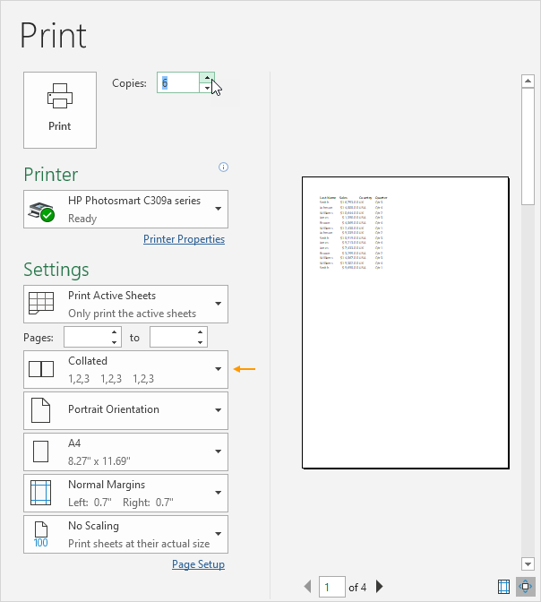
Orientasi
Anda dapat beralih antara Orientasi Potret (lebih banyak baris tetapi lebih sedikit kolom) dan Orientasi Lanskap (lebih banyak kolom tetapi lebih sedikit baris).

Margin Halaman
Untuk menyesuaikan margin halaman, jalankan langkah-langkah berikut.
1. Pilih salah satu margin yang telah ditentukan sebelumnya (Normal, Wide atau Narrow) dari daftar drop-down Margins.
2. Atau klik ikon 'Show Margins' di kanan bawah jendela. Sekarang Anda dapat menyeret garis untuk mengubah margin halaman secara manual.

penskalaan
Jika Anda ingin memasukkan lebih banyak data pada satu halaman, Anda dapat memasukkan lembar tersebut pada satu halaman. Untuk mencapai ini, jalankan langkah-langkah berikut.
1. Pilih 'Fit Sheet on One Page' dari daftar drop-down Scaling.

Catatan: Anda juga dapat mengecilkan hasil cetak menjadi satu halaman lebar atau satu halaman tinggi. Klik Opsi Penskalaan Kustom untuk memasukkan persentase penskalaan secara manual atau untuk menyesuaikan hasil cetak dengan jumlah halaman tertentu yang lebar dan tinggi. Hati-hati, Excel tidak memperingatkan Anda saat hasil cetak Anda menjadi tidak terbaca.
kembali keatasWorkbook Views | Page Breaks | Headers and Footers | Page Numbers | Print Titles | Center on Page | Print Gridlines & Headings | Print Area
Tampilan Buku Kerja ()
Biasa | Pratinjau Hentian Halaman | Tata letak halaman
Excel menawarkan tiga tampilan buku kerja, Normal, Tata Letak Halaman, dan Pratinjau Hentian Halaman.
Normal
Kapan saja, Anda dapat beralih kembali ke tampilan Normal.
1. Pada tab Tampilan, dalam grup Tampilan Buku Kerja, klik Normal.

Hasil:
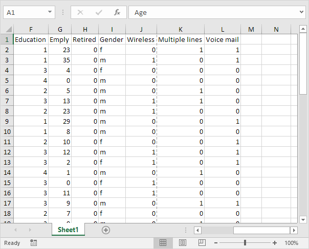
Catatan: jika Anda beralih ke tampilan lain dan kembali ke tampilan Normal, Excel menampilkan hentian halaman. Tutup dan buka kembali file Excel untuk menyembunyikan jeda halaman ini. Untuk selalu menyembunyikan hentian halaman untuk lembar kerja ini, klik File, Opsi, Tingkat Lanjut, gulir ke bawah ke Tampilkan opsi untuk lembar kerja ini dan hapus centang Perlihatkan hentian halaman.
Pratinjau Hentian Halaman
Pratinjau Pemutusan Halaman memberi Anda gambaran umum yang bagus tentang di mana halaman pecah saat Anda mencetak dokumen. Gunakan tampilan ini untuk mengeklik dan menyeret jeda halaman dengan mudah.
1. Pada tab Tampilan, dalam grup Tampilan Buku Kerja, klik Pratinjau Hentian Halaman.

Hasil:

Catatan: klik dan seret jeda halaman untuk memasukkan semua informasi pada satu halaman. Hati-hati, Excel tidak memperingatkan Anda saat hasil cetak Anda menjadi tidak terbaca. Secara default, Excel mencetak ke bawah, lalu selesai. Dengan kata lain, ia mencetak semua baris untuk set kolom pertama. Selanjutnya, ia mencetak semua baris untuk kumpulan kolom berikutnya, dll. (lihat nomor halaman pada gambar di atas untuk mendapatkan ide). Untuk beralih ke Print over, lalu down, klik File, Print, Page Setup, pada tab Sheet, di bawah Page order, klik Over, lalu down.
Tata letak halaman
Gunakan tampilan Tata Letak Halaman untuk melihat di mana halaman dimulai dan diakhiri, dan untuk menambahkan header dan footer.
1. Pada tab Tampilan, dalam grup Tampilan Buku Kerja, klik Tata Letak Halaman.

Hasil:
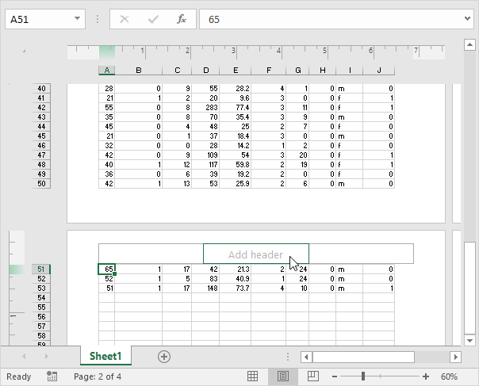
Hentian Halaman
Sisipkan page break di Excel untuk menentukan di mana halaman baru akan dimulai dalam salinan cetak.
Untuk menyisipkan hentian halaman horizontal, jalankan langkah-langkah berikut.
1. Pilih baris pertama halaman baru.
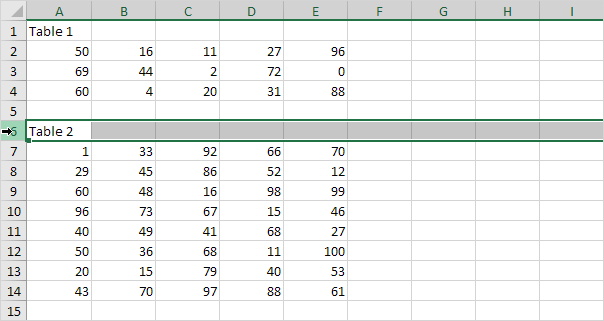
2. Pada tab Page Layout, dalam grup Page Setup, klik Breaks.
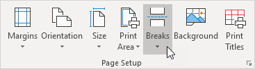
3. Klik Sisipkan Hentian Halaman.
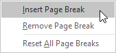
Excel menampilkan garis padat (pembatas halaman manual) untuk menunjukkan kepada Anda di mana halaman baru dimulai. Garis putus-putus adalah page break yang disisipkan secara otomatis oleh Excel.
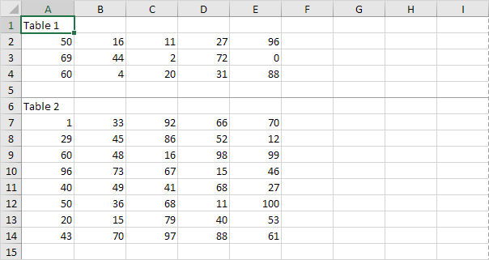
Catatan: dengan cara yang serupa, Anda dapat memilih kolom untuk menyisipkan hentian halaman vertikal.
4. Pada tab File, klik Print (Cetak) untuk pratinjau cetak.
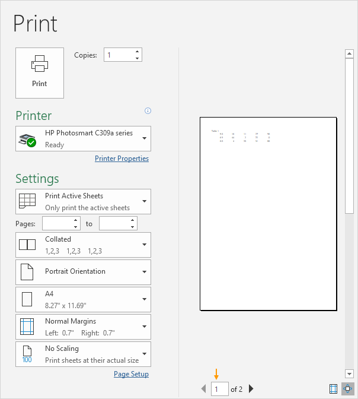
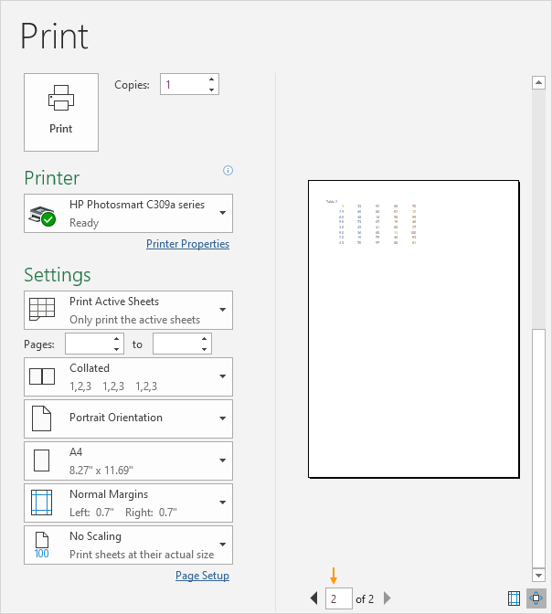
Catatan: untuk menghapus Hentian halaman horizontal, pilih sel di bawah Hentian halaman yang ingin Anda hapus dan klik Hentian, Hapus Hentian Halaman. Untuk menghapus semua Hentian halaman manual, klik Breaks, Reset All Page Breaks. Anda tidak dapat menghapus jeda halaman otomatis.
Header dan Footer
Contoh ini mengajarkan Anda cara menambahkan informasi ke header (atas setiap halaman yang dicetak) atau footer (bawah setiap halaman yang dicetak) di Excel.
1. Pada tab Tampilan, dalam grup Tampilan Buku Kerja, klik Tata Letak Halaman, untuk beralih ke tampilan Tata Letak Halaman.
2. Klik Tambahkan tajuk.
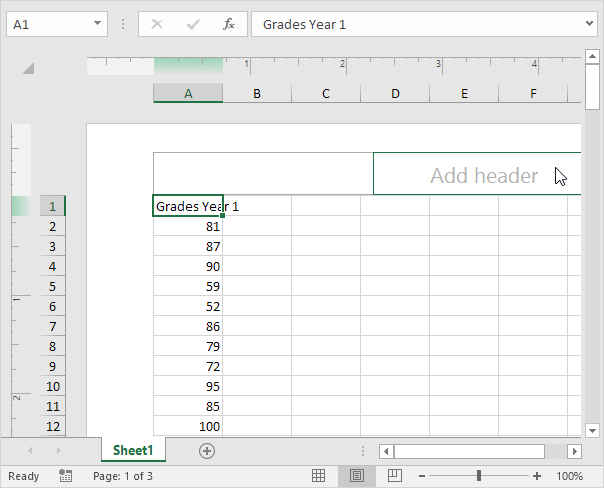
Tab kontekstual Alat Header & Footer diaktifkan.
3. Pada tab Desain, dalam grup Elemen Header & Footer, klik Tanggal Saat Ini untuk menambahkan tanggal saat ini (atau tambahkan waktu saat ini, nama file, nama lembar, dll).
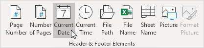
Hasil:
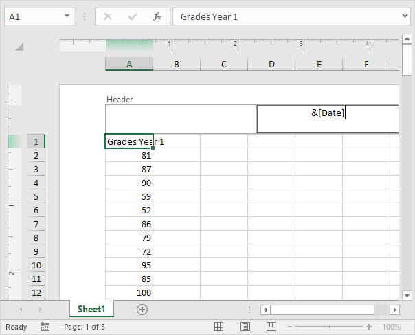
Catatan: Excel menggunakan kode untuk memperbarui header atau footer secara otomatis saat Anda mengubah buku kerja.
4. Anda juga dapat menambahkan informasi di bagian kiri dan kanan header. Misalnya, klik bagian kiri untuk menambahkan nama perusahaan Anda.
5. Klik di tempat lain pada lembar untuk melihat header.
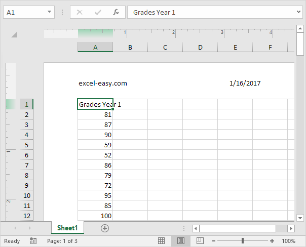
6. Pada tab Desain, dalam grup Opsi, Anda dapat menambahkan header/footer halaman pertama yang berbeda dan header/footer berbeda untuk halaman ganjil dan genap.

7. Pada tab Tampilan, dalam grup Tampilan Buku Kerja, klik Normal, untuk beralih kembali ke tampilan Normal.
Nomor Halaman
Contoh ini mengajarkan Anda cara memasukkan nomor halaman di Excel.
1. Pada tab Tampilan, dalam grup Tampilan Buku Kerja, klik Tata Letak Halaman, untuk beralih ke tampilan Tata Letak Halaman.
2. Klik Tambahkan footer.

Tab kontekstual Alat Header & Footer diaktifkan.
3. Pada tab Desain, dalam grup Elemen Header & Footer, klik Nomor Halaman untuk menambahkan nomor halaman.
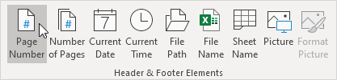
4. Ketik " dari "
5. Pada tab Design, di grup Header & Footer Elements, klik Number of Pages untuk menambahkan jumlah halaman.

Hasil:
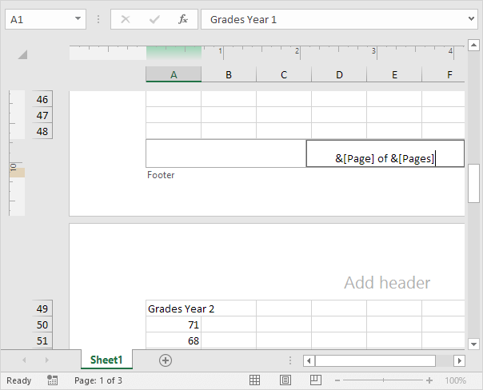
Catatan: Excel menggunakan kode untuk memperbarui header atau footer secara otomatis saat Anda mengubah buku kerja.
6. Klik di tempat lain pada lembar untuk melihat footer.
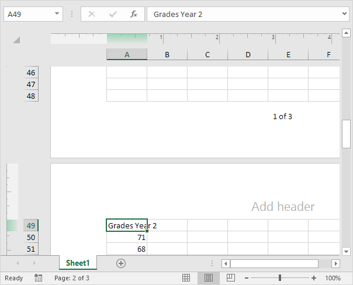
7. Pada tab Desain, di grup Opsi, Anda dapat menambahkan header/footer halaman pertama yang berbeda dan header/footer berbeda untuk halaman ganjil dan genap.
8. Pada tab Tampilan, dalam grup Tampilan Buku Kerja, klik Normal, untuk beralih kembali ke tampilan Normal.
Cetak Judul
Anda dapat menentukan baris dan kolom di Excel yang akan dicetak pada setiap halaman yang dicetak. Ini dapat membuat salinan cetak Anda lebih mudah dibaca.
Untuk mencetak judul, jalankan langkah-langkah berikut.
1. Pada tab Page Layout, dalam grup Page Setup, klik Print Titles.
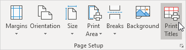
Kotak dialog Penyetelan Halaman muncul.
2. Untuk mengulang baris 1 di bagian atas setiap halaman yang dicetak, klik di kotak yang sesuai dan pilih baris 1.
3. Klik Oke.

Catatan: dengan cara yang sama, Anda dapat mengulang kolom di sebelah kiri setiap halaman yang dicetak.
4. Pada tab File, klik Print (Cetak) untuk pratinjau cetak.
Label (Nama Belakang, Penjualan, Negara dan Kuartal) muncul di halaman 1 dan halaman 2.

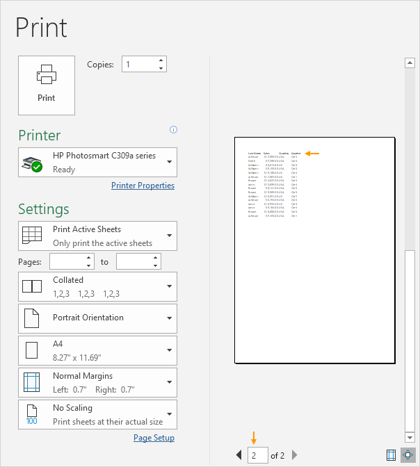
Pusat di Halaman
Untuk memusatkan rentang sel pada halaman yang dicetak di Excel secara otomatis, jalankan langkah-langkah berikut.
1. Pada tab File, klik Cetak.
2. Klik 'Margin Kustom' dari daftar drop-down Margin.

3. Selanjutnya, periksa secara horizontal dan vertikal.
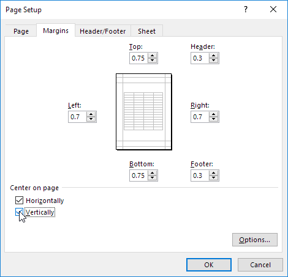
4. Klik Oke.
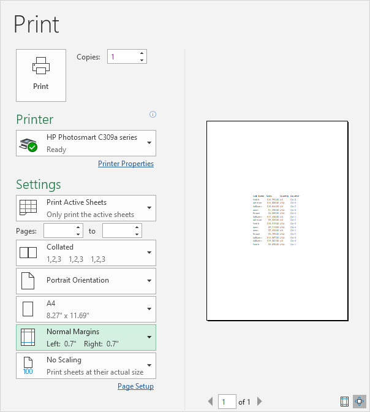
Cetak Garis Kisi dan Judul
Cetak garis kisi ( garis horizontal dan vertikal pada lembar kerja Anda) dan judul baris/kolom (1, 2, 3 dst. dan A, B, C dst.) untuk membuat salinan cetak Anda lebih mudah dibaca.
Untuk mencetak garis kisi dan judul di Excel, jalankan langkah-langkah berikut.
1. Pada tab Page Layout, di grup Sheet Options, centang Print di bawah Gridlines dan centang Print di bawah Headings.
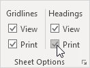
2. Pada tab File, klik Print (Cetak) untuk pratinjau cetak.
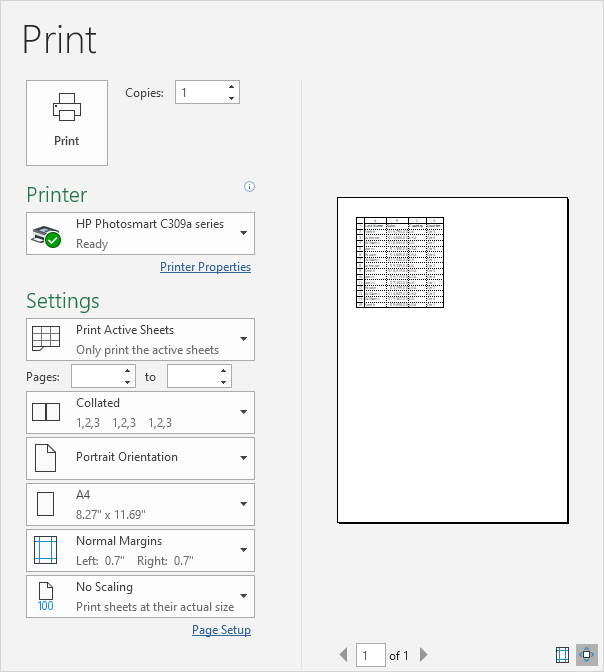
Area Cetak
Jika Anda mengatur area cetak di Excel, hanya area itu yang akan dicetak. Area cetak disimpan saat Anda menyimpan buku kerja.
Untuk mengatur area cetak, jalankan langkah-langkah berikut.
1. Pilih rentang sel.
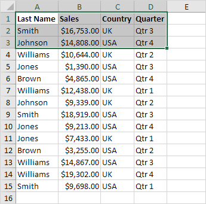
2. Pada tab Page Layout, dalam grup Page Setup, klik Print Area.

3. Klik Setel Area Cetak.
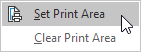
4. Simpan, tutup dan buka kembali file Excel.
5. Pada tab File, klik Cetak.
Hasil. Lihat pratinjau cetak di bawah ini. Hanya area cetak yang akan dicetak.
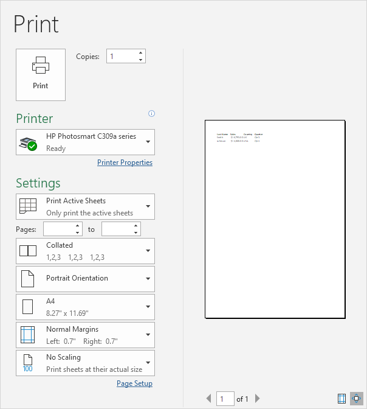
Catatan: gunakan Pengelola Nama untuk mengedit dan menghapus area cetak. Pada tab Rumus, dalam grup Nama yang Ditentukan, klik Manajer Nama.
kembali keatas